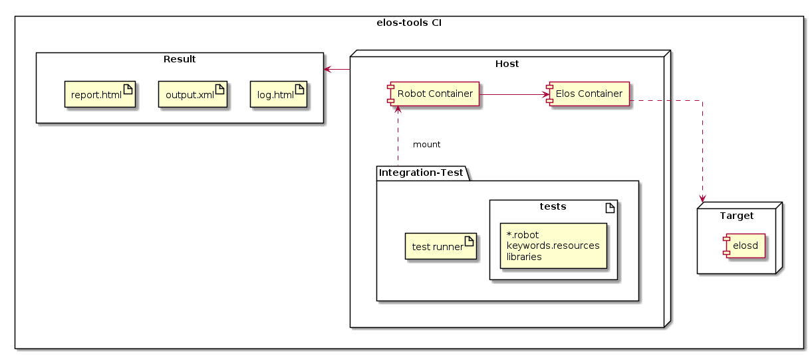
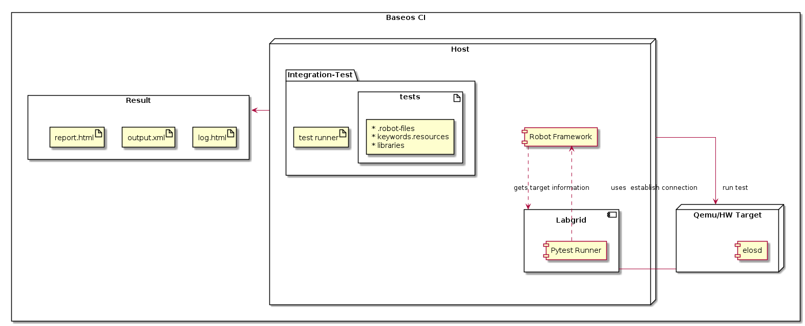

Test & Verification¶
Goal:
This document shall outline all measures taken to ensure that the software fulfills the intended purpose and does not have unwanted behavior. Alongside the project there are several techniques and measurements used and different test setups developed, to ensure the expected behavior.
[[TOC]]
Coding Guideline¶
Goal:
A coding guideline was defined to reduce common programming error and to increase readability and thus understandability of the code.
The to be used coding guideline is found here: link, Version x
The guideline is checked during static analysis step, described below.
Development process¶
Goal:
All changes to the repository shall be reviewed by an additional person, that is experienced with the software. Hence four-eyes have checked each modification.
The check is documented by means merge- or pull requests of the gitlab/github system.
Static analysis¶
Goal:
Static analysis shall verify that the coding guideline was fulfilled and common rules of secure and safe programming are followed.
The CI system is responsible of running the check regularly.
GCCs Static Analyzer¶
On default build with GCCs Static Analyzer enabled
to find common programming issues the project is build on default with GCC’s Static Analyzer enabled
To explicitly disable it for some reasons (i.e perf benchmarks see. profiling) build with
cmake -DENABLE_ANALYZER=off
Testing¶
Goal:
During tests the capabilities of the software are verified. Basically the question is answered: Does the software (or parts from it) react as intended?
Unit Test test/utest¶
Goal:
unit-tests verify the the correct function on the lowest level of the software. e.g. they verify that a c function returns the correct values on given input.
The CI system is responsible of running the utests regularly.
Details:
covers all parts of src/
structure is <component-name>/<compilation-unit-name>/public_function_name/case_<error|exterr|successful|…>.c
how to run the utest from git project root:
call |
./elos/ci/run_utest.sh| to run the unit tests for the debug buildcall |
./elos/ci/run_utest.sh Release| to run the unit tests for the release build
coverage is proven by asmcov, because gcov has dependencies on glibc and the test actually mock libc functions to achieve 100% branch coverage. (gcov and libc mocking doesn’t work)
executed by CI-pipeline
controlling the build of unit test with
cmake -DUNIT_TESTS=<on/off> -DINSTALL_UNIT_TEST<on/off>unit tests shall make use of the sanitizers
Coverage by asmcov¶
To generate a coverage report for the unit tests asmcov is used. The basic steps are:
Run and trace the unit test with
perf-> perf.dataCreate the the instruction stream with perf -> perf.trace
Evaluate test binary and trace with asmcov to get a coverage statement -> asmcov.log
Usage¶
Currently two usage scenarios are supported:
For the CI build: create coverage for all available unit tests
For the developer: create coverage for a given test or group of tests
To create a complete coverage report for the project simply run:¶
./elos/ci/create_coverage.sh
The results can be found in ./build-coverage/coverage_results
To create a coverage report for a certain or group of unit test(s) proceed as follows:¶
build without Address Sanitizer support, to avoid additional code added by the gcc or be aware that probably not 100% branch coverage can be achieved as this code is not under your control.
cmake -B ./build-coverage elos -DCMAKE_BUILD_TYPE=Release
make -C ./build-coverage
run the coverage suite
BUILD_DIR=./build-coverage ./elos/test/coverage/run_asmcov.sh functionName [otherFunctionName] [compilationUnitName]
## only run the test for safuVecCreate
BUILD_DIR=./build-coverage ./elos/test/coverage/run_asmcov.sh vecCreate
## only run the test for safuVecCreate and elosEventSerialize
BUILD_DIR=./build-coverage ./elos/test/coverage/run_asmcov.sh vecCreate eventSerialize
## only run the all tests for the compilation unit vector.c
BUILD_DIR=./build-coverage ./elos/test/coverage/run_asmcov.sh vector
## only run the all tests for the compilation unit vector.c and event.c
BUILD_DIR=./build-coverage ./elos/test/coverage/run_asmcov.sh vector event
## run all test that match the pattern `test_*_utest` and located in elos/build/${BUILD_TYPE}/cmake/test/utest
BUILD_DIR=./build-coverage ./elos/test/coverage/run_asmcov.sh
The results can be found in elos/build/${BUILD_TYPE}/coverage_results
To use a custom install location of asmcov set ASMCOV_DIR and point to the
location where the asmcov binaries are installed.
Smoke Tests test/smoketest¶
Goal:
Smoke tests are quick to execute and they give a brief overview about the basic functionality. Smoke tests try to answer: Is the software still basically OK? Or does it crash right away?
The CI system is responsible of running the smoke tests regularly.
Details:
Runs all composed artifacts to ensure a basic expected functionality
Make usage of the demo project to check expected behavior of elosd
Executed by CI-pipeline
Written in pure Bash
how to run the smoke test from git project root:¶
./elos/ci/build.sh [Release]
call
./elos/ci/run_smoketests.shto run the smoketests for the debug buildcall
./elos/ci/run_smoketests.sh Releaseto run the smoketests for the release build
Run on a target¶
To run the smoketest install all content in elos/tests/smoketest to a custom
location on the target system. Currently it is not packaged and installed by
elos build system itself.
Prerequisites :¶
Elos is installed on target system
At least a writeable directory to store results and for intermediate files
HOWTO¶
To execute the smoketests run the installed smoketest.sh script. Here an example script to for smoketest integration (taken form baseos-lab)
#!/bin/sh -xe
export ELOS_SCANNER_PATH=/usr/lib/elos/scanner
export ELOS_BACKEND_PATH=/usr/lib/elos/backend
export SMOKETEST_DIR=/usr/lib/test/baseos-elos/smoketest/
export SMOKETEST_RESULT_DIR=/tmp/test-baseos-elos-smoketest
## make sure to stop elosd instances before
/usr/lib/test/baseos-elos/smoketest/smoketest.sh
Extended configuration¶
Depending on the installation and configuration it could be necessary to adjust some settings. The following Environment variables can be used :
Use LD_LIBRARY_PATH to include custom locations for elos libraries.:
export LD_LIBRARY_PATH=${LD_LIBRARY_PATH}:/some/location
default is : elos/build/${BUILD_TYPE}/dist/usr/local/lib
Use PATH to include custom locations for elos
export PATH=${PATH}:/some/location
default is: ${PATH}:${DIST_DIR}/usr/local/bin”
Use SMOKETEST_DIR to point to the location where elos-smoketests are installed
export SMOKETEST_DIR=/some/location
default is : elos/test/smoketest/
Use SMOKETEST_RESULT_DIR to define where to store smoke tests results
export SMOKETEST_RESULT_DIR=/some/write/able/location
default is : “elos/build/${BUILD_TYPE}/result/smoketest_results”
Use SMOKETEST_TMP_DIR to define where to store intermediate results and or runtime files like sockets, pipes etc.
export SMOKETEST_TMP_DIR=/some/write/able/location
default is: “/tmp/elosd”
Use ELOS_SYSLOG_PATH to define an alternative location for the syslog unix domain socket
export ELOS_SYSLOG_PATH=/some/write/able/location/mysyslog.socket
default is: ${SMOKETEST_TMP_DIR}/elosd.syslog.socket
Use ELOS_KMSG_PATH to define an alternative location for the kmsg file
export ELOS_KMSG_FILE=/some/write/able/location/my_dev_kmsg
default is: ${SMOKETEST_TMP_DIR}/elosd.kmsg”
Use ELOS_SCANNER_PATH to define where elos shall look for scanner plugins (
\*.sofiles)
export ELOS_SCANNER_PATH=/some/location
default is: $DIST_DIR/usr/local/lib/elos/scanner
Use ELOS_BACKEND_PATH to define where elos shall look for backend plusings (
\*.sofiles)
export ELOS_BACKEND_PATH=/some/location
default is: $DIST_DIR/usr/local/lib/elos/backend
Use ELOS_CONFIG_PATH to define where the elosd configuration is stored.
export ELOS_CONFIG_PATH=/a/readable/elosd/json/configuration
default is: $SMOKETEST_DIR/config.json
For the purpose of the smoketests, the elosd config is mostly relevant to configure the storage location of the backend and scanner plugins.
Integration Test¶
Goal:
Integration tests verify that the software fulfills all requirements in the final environment.
Integration tests shall be done before release of a new version.
Details:
Integration Tests account for testing usecases that are not covered by smoketests or unittests and ensure elosd works as expected.
Tests need to be target agnostic and therefore are packaged as separate elos-integration-test package.
Robot test framework is used to create integration tests
integration tests shall make use of the sanitizers
Components¶
The fundamental components required for integration tests are as given below, apart from these, additional components are added according to test environment.
Robot test framework
Robot Framework is a test automation framework.
Integration tests are written with the help of Robot test framework.
Robocop
Robocop static code analyser for robot framework
Tests written with robotframework are statically analysed using robocop tool
Robotidy
Robotidy code linter for robot framework
code linter for tests written in robot framework
Integration test package
A test directory has one or more tests written in robot as well as sub directories containing tests
The integration test can be found in
test/integrationElos integration test package consists of all tests in the integration directory
Test targets
The target has elosd installed and running when integration tests are executed. They could be
Container
Qemu hardware emulator
Client hardware
Setup¶
Integration test setup for elos CI¶

The host system has the elos-integration-test packages and a test-runner script.
The robot container where the robot test framework is installed. The test package directory is mounted on to this container.
The elos container where elosd is installed and running serves as the target.
The test results are stored in
build/[Debug|Release]/result/integration
New tests are added directly in the elos-integration-test package. Starting the container with robot framework installed, mounts the test-package automatically. The test runner script is found in integration/scripts. The target container should be started before running the test runner script. Starting the target container installs elosd from source and runs it. The test-runner script requires the target credentials like username, password and target ip address in order to run the tests.
Integration test setup for Base OS Lab CI¶

The host base-os lab has the following components :
elos-integration-package
Robot framework
Labgrid
Pytest Runner plugin for Labgrid
An hardware emulator (QEMU) or the client hardware will be used as the target.
Test results will be stored in
<<test_image>>/report
The host in base os lab is a container with the robot framework, labgrid and pytest plugin for labgrid installed. The elos-integration-test package is retrieved from elos-tools repository. Labgrid establishes connection with the target which could be a client hardware or qemu image. Upon establishing connection, target information like ip address is retrieved for use by integration tests . The pytest runner plugin is used to run ptests in the target. The call to run robot integration tests is encapsulated in a new test. The test run scripts when called, build and boots the target and runs the test and stores the reult in the host system.
Usage¶
The integration tests can be run by calling:
cd elos
./ci/run_integration_tests.sh [Release] # run integration tests automatically
This will start two docker containers and execute the tests.
The results will be stored in build/[Debug|Release]/result/integration.
In order to manually run the integration tests in the local repository
cd elos
./ci/docker-target-run.sh # start target container in a terminal
cd elos
./ci/docker-integration-run.sh # start test container in a separate terminal
PROJECT="elos" ./scripts/run_integration_tests.sh # inside the container set project variable and run the test runner script
When doing this, the result storage path can be configured by setting the enviroment variable
TEST_OUTPUT for the run_inetgration_tests.sh script.
CI integration¶
The ./ci/docker-integration-run.sh can be used to run in some CI environment, however to ensure that used docker container and image names are uniwue and not interfer with different parallel runs of these test suite the follwoing variabeles shall be set.
CI="true"
BUILD_ID="42"
GIT_COMMIT="0000000000000000000000000000000000000000"
These will be used to generate unique docker-container and image names. The
pattern look like ${ELOSD_IMAGE_NAME}-${BUILD_ID}-${GIT_COMMIT}.
(yocto-) baseos-lab integration¶
To manually run the test in base os lab
cd eb-baseos-lab
./ci/docker-run.sh # start host container
# Inside container
./ci/repo-init.sh # initialize submodule
./ci/build.sh # build target image **note** - the previous step and this step needs to be run at least once before test run
./ci/qemu-test.sh -i <<image_name>> # build and boot given qemu image and run integration tests on it.
# To test on all images use --build-all and no image name instead of -i
Writing a Robot Test¶
The directory structure for integration test is as show below.
elos
├── test
├── integration
├── testmodule
├── test.robot
├── subtestmodule
├── subtest.robot
New test suites are added to elos/test/integration.
Coding Guidelines¶
The coding guidelines for robot static code analysis are as given in elos/test/integartion/scripts/robot_linter_config.txt. The
guide lines are quite liberal as default and can be further restricted depending on the user requirements. The default guidelines are
as follows:
The length of a robot keyword is set to 50
A keyword can call a maximum of 20 other keywords inside it.
Since template test cases dont have keywords, check for too few calls to keywords shall be avoided.
Line width for robot tests are set to 100
static checks shall only report log levels of above warning.
Step by step guide to create and run integration test¶
An example of a robot test is given below :
*** Settings ***
Documentation ssh test script
Library SSHLibrary
*** Variables ***
${host} 192.168.7.1 # replace with target under test (TUT) ip
${username} root # replace with TUT username
${password} ${EMPTY} # replace with TUT password
${alias} target # use any appropriate alias for target
${hostname} qemu-64 # replace with TUT hostname
*** Test Cases ***
Test SSH Connection
Open Connection ${host} alias=${alias}
Login ${username} ${password} delay=1
${output}= Is Connected
Should Be Equal As String ${output} ${hostname}
Close All Connections
*** Keywords ***
Is Connected
${value}= Execute Command hostname
RETURN ${value}
Create file
new_test_suite.robotfile underelos/test/integration/new_module.Copy the above code into
new_test_suite.robotChange test variables to target under test (TUT) values.
To run test start target elosd container by
./elos/ci/docker-target-run.shfirst.In a separate terminal start robot container by
./elos/ci/docker-integration-run.shInside the robot container run all tests using script
PROJECT="elos" ./scripts/run-integration-tests.shThe test results are stored in
report/new_moduleIn order to run individual test use
robot --outputdir=report/new_module --output=new_test_suite --report=new_test_suite new_test_suite
## In order to run only a testcase from the test suite
robot -t test_case_name --outputdir=report/new_module --output=test_case_name --report=test_case_name new_test_suite
Robot Test Explanation¶
In Robot Framework, each robot file is a test suite. Likewise, a directory containing .robot files is a master test suite. Unless Robot Framework is given with a single robot file to execute, it wil try to look for robot files recursively. Spaces in filename should be replaced by an underscore.
This test checks ssh connection to a target whose ip, username and password is known. The test script is divided into 4 sections.
Settings - The required test settings with the keywords
The Documentation keyword is a simple test description text
The Library keyword imports keywords from given argument. The argument for this keyword is SSHLibrary, which has keywords for a ssh interaction with given target.
More keyword under settings is found here Additional Settings Keywords
Variables - The variables to be used in this test
The variables created in the variable section have a test suite scope.
All test cases inside a robot file can access it.
The variables have read write permission.
In order to over write a variable defined in the variable section, the
Set Test Variablebuilt in keyword can be used.
Test case - The actual test case which is written in using available keywords and arguments.
Keywords - Here keyword can be defined which shall be used in one or more testcases in the robot file.
In test suits variables and keywords can be added to a *.resource file in order to share them. They are imported into tests that require them, using the resource keyword in the settings section as given below.
* Settings *
Documentation ssh test script
Resource keywords.resource
Variables created in .resource files can be of type other than strings.
Robot Test Linter¶
The code check and linting of robot tests are done as follows:
cd elos
./ci/run_integration_tests_linter.sh [Debug|Release]
This will start the .test/integration/scripts/robot_code_lint.sh script which will do a static code check on all integration tests.
The results will be stored in build/[Debug|Release]/result/integration/robot_lint/robot_lint.log, only when one or more of the tests fail the checks.
After analysing the results, the tests which fail can be fixed using the robotidy linter as geven below
./test/integration/scripts/robot_code_lint.sh --show
This will point out the format errors in the given test.robot and gives suggestions to fix them. If no test is specified all tests wil be checked and suggestion will be shown.
If the fixes suggested are satifactory, then the fixes can be implemented by
./test/integration/scripts/robot_code_lint.sh --show-fix
This will show the suggested changes before writing them to the corresponding test/s.
For other options in the robot_code_lint.sh use
./test/integration/scripts/robot_code_lint.sh --help
Benchmarks¶
Goal:
Benchmarks record selected key performance indicators (KPI) that are relevant for the resource consumption and performance of the software.
Benchmarks shall be done before release of a new version.
Details:
gives a general overview of how elosd performs
the benchmarks covers the following setups: ** 1 on 1 : 1 subscriber per 1 publisher for 1,2,5,10,100 subscribers and publishers ** 1 on n : n subscriber per 1 publisher for 1,2,5,10,100 subscribers and 1,2 publishers
the results can be found in build/benchmark_results ** report_<messages><subscriber><publisher>.csv containing the plain timestamps for (send,dispatched,received) ** report_<messages><subscriber><publisher>.csv.png a visualization of the csv-report files.
how to run the benchmarks from git project root:
cmake -B build elos
make -C build
./elos/ci/run_benchmarks.sh
Profiling¶
gives a insides on how elosd spends its time during execution
for profiling perf is used
the results can be found in build-perf/perf_results/<timestamp> ** perf.data is the raw output from perf ** perf_output.txt contains profiling info from perf.data in text form
how to run the benchmarks from git project root:
cd ./elos/test/profiling
sudo ./perf.sh setcap # Allow profiling without root rights
./perf.sh clean # Removes build and profiling files
./perf.sh build # Build the project with the profiling flag
./perf.sh elosd # Monitor elosd and store the results
./perf.sh hotspot # Call the 'hotspot' tool with the latest profiling data set
sudo ./perf.sh restorecap # Restores old capability value
Sanitizers¶
Goal:
During testing (utest, smoketest, integration tests) some self checking sanitizers shall be used to detect unwanted behavior.
Address Sanitizer¶
Only the ‘Debug’ target build comes with the Address Sanitizer enabled
to find common memory access/management failures the project is build on default (Debug) with GCC’s Address Sanitizer enabled
the Release target is guaranteed to come without sanitizers in case you want to use other tools like Valgrind (build with
cmake -DCMAKE_BUILD_TYPE=Release)sanitizers shall be used in unit- and integration-tests.
Thread Sanitizer¶
Only the ‘Tsan’ target build comes with the Thread Sanitizer enabled
Can be used to find data races, erronous mutex accesses and other multi-threading related problems.
Can be built with
./ci/build.sh Tsanor configured withcmake -DCMAKE_BUILD_TYPE=Tsan.Has its own build target due to it being incompatible with other sanitizers like ASAN and Valgrind.
Currently not part of the CI pipeline as we still evaluate its usefulness.